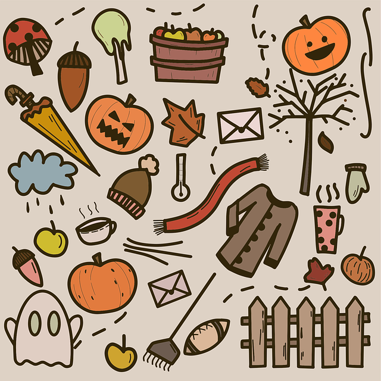

Halloween Decorations
When it comes to Halloween, one of the best parts of the holiday is the
decorations. Being able to walk around the neighborhood and see people's houses all decorated brings out the spirit of the holiday a lot more.
People also decorate the inside of their houses to also bring the spirit of halloween.

Pumpkin
Speaking of decorations, one of the most iconic halloween decorations is the jack-o-lantern. The jack-o-lantern is just a pumpkin that is carved into a specific design, in most cases, it's usually just a design of a face, as shown in the image below. People typically leave these jack-o-lanterns in their house as a decoration, or use them as an outside decoration.

Trees
One thing that makes Halloween special is the scenery at night. As shown below, this is a representation of how night can look, but having these nights around halloween can make the vibes so much more eerie.